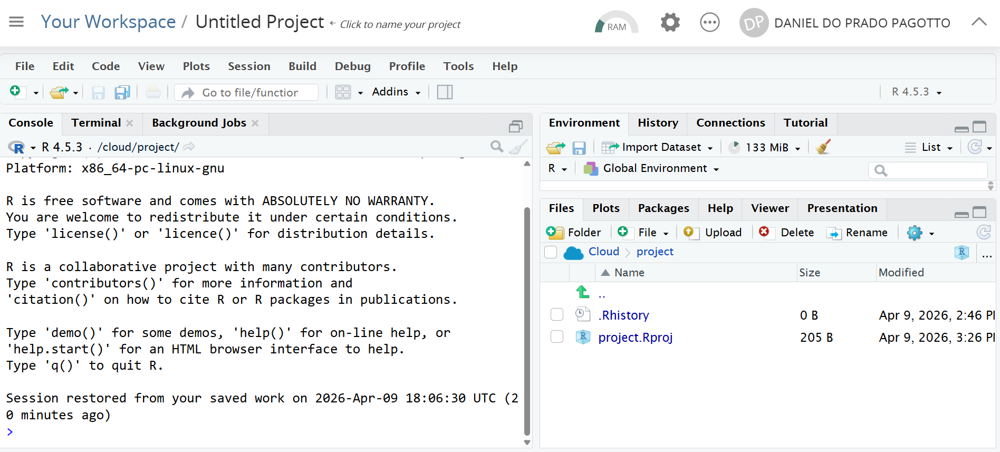
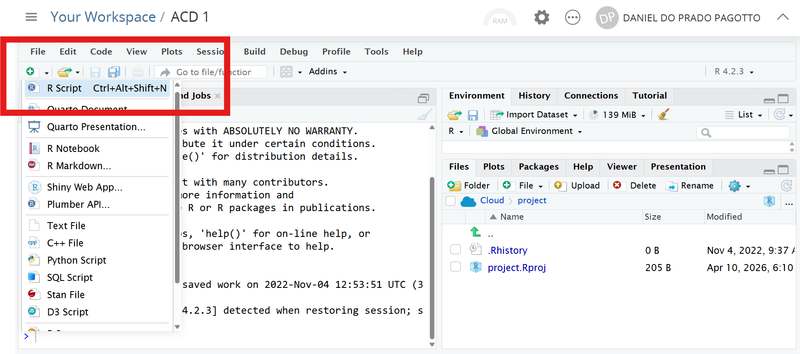
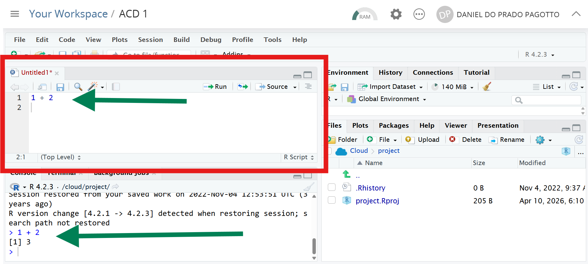
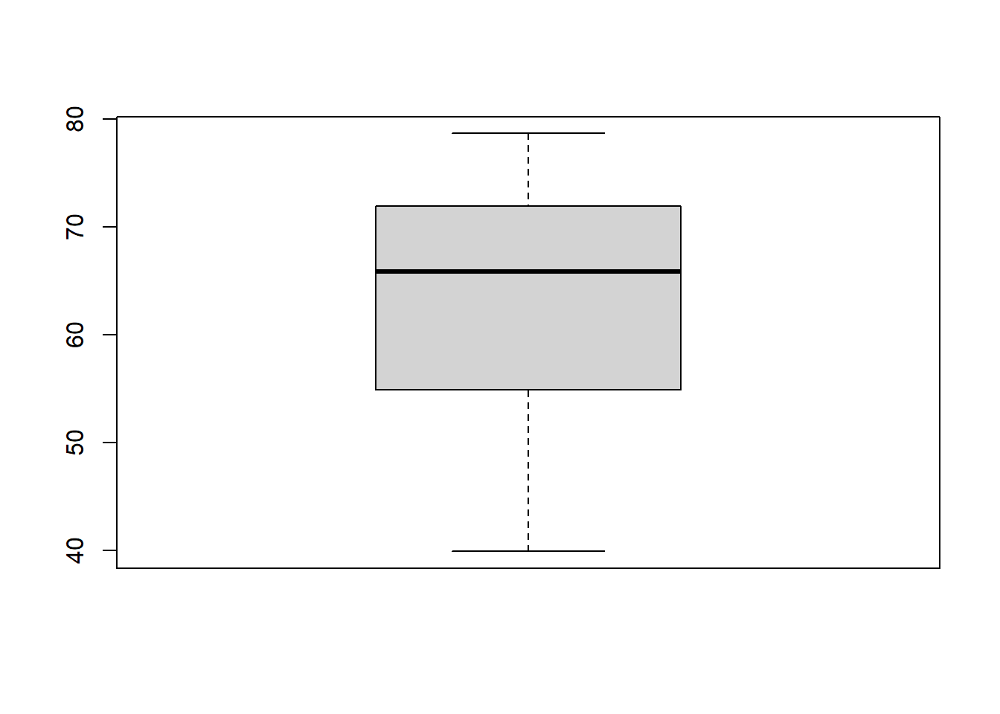
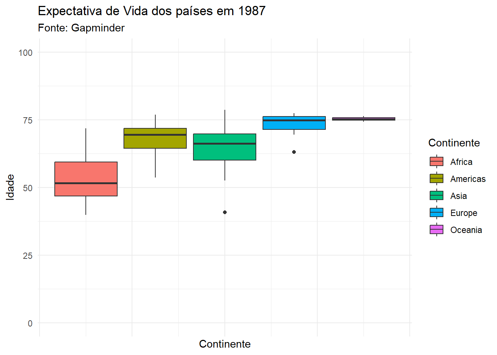
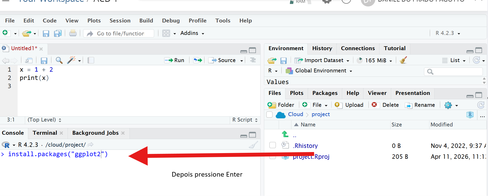
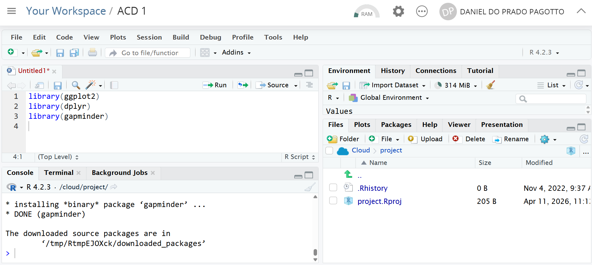
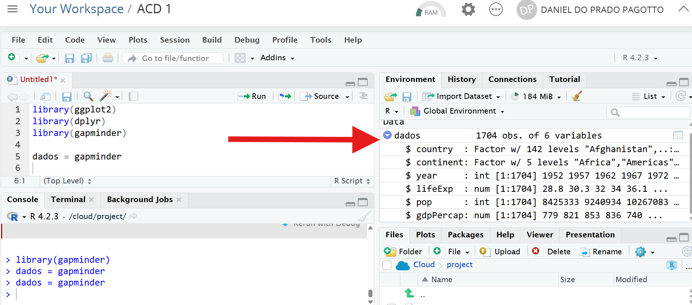

1 + 6[1] 75 * 2[1] 108 - 15[1] -716/2[1] 85**2 [1] 25sqrt(36)[1] 6Este material foi desenvolvido pelo Prof. Daniel Pagotto para a disciplina de Análise e Comunicação de Dados.
A primeira ferramenta de análise de dados que vamos aprender é a linguagem de programação R.
R também é uma linguagem de programação, assim como Python, que vocês estão aprendendo na disciplina de algoritmos.
Este documento tem algumas seções:
A interface do RStudio (ou Posit Cloud);
Fazendo operações básicas;
Carregando os dados e realizando os primeiros tratamentos;
Aplicação no R de tudo que vimos até agora na disciplina;
Explorando os dados com o pacote de manipulação de dados dplyr.
Professor, o que estes dois programas - RStudio e Posit Cloud - têm em comum?
E o que eles têm de diferente?
Você consegue acessar o Posit Cloud por meio deste link. Basta fazer o login usando uma conta do google ou criar sua conta pelo email que quiser.
A carinha do Posit Cloud é esta.

Por enquanto, não vou explicar o que significa cada campo e botão da interface.
Sabe jogo de tabuleiro? Você lê as regras e não entende de primeira. Só depois de algumas rodadas do jogo que você realmente entende de fato como funciona. Aqui é igual.
Por hora, só quero que você faça algumas coisas:
1) Clique em “R Script” conforme o print;

2) O script será aberto conforme destacado de vermelho. Digite alguma operação como esta (1 + 2) e aperte ctrl + enter. Veja que o R vai executar a operação apresentando um resultado (output) lá embaixo.

Já devem ter visto na disciplina de algoritmos, mas reforço aqui: pensem que um computador sempre vai fazer três coisas - receber uma entrada de dados, um processamento e uma saída. Neste pequeno trecho de código temos uma entrada
1 + 2, um processamento (a operação sendo executada) e uma saída lá embaixo (o resultado da operação).
É muito importante que leia atentamente o material e reproduza o código no seu computador.
Não copie e cole os trechos de código, DIGITE e rode os comandos. Isso é importante para o sucesso do seu aprendizado!
Antes de iniciar a análise de dados, vamos fazer algumas operações básicas.
Como qualquer linguagem de programação, o R é uma calculadora.
Teste rodar algumas operações básicas e veja os resultados.
Lembre-se: coloque a operação e com o cursor em cima da linha e aperte ctrl + enter para rodar.
1 + 6[1] 75 * 2[1] 108 - 15[1] -716/2[1] 85**2 [1] 25sqrt(36)[1] 6sqrt vem de square root, raiz quadrada em inglês.
A ordem de execução é semelhante da matemática! Multiplicação e divisão sempre virão antes. Porém, se você quiser definir outra ordem de execução, use parênteses. Veja abaixo.
5 + 6 * 6 # a multiplicação ocorre primeiro[1] 41(5 + 6) * 6 #o 5 + 6 é executado primeiro e depois multiplicado[1] 66Note que na primeira operação teremos a multiplicação sendo executada primeiro, o que resulta 41.
Já na segunda operação temos a soma entre parênteses sendo executada antes, o que resulta em 66.
Suponha que a gente tenha cinco notas da disciplina de ACD, conforme a seguir, calcule a média.
| ID aluno | Nota |
|---|---|
| 1 | 6,5 |
| 2 | 8 |
| 3 | 9,2 |
| 4 | 4,6 |
| 5 | 7,6 |
Vamos calcular a média.
Atenção! Você tem que usar ponto (e não vírgula) para separar as casas decimais!
(6.5 + 8 + 9.2 + 4.6 + 7.6)/5[1] 7.18Exercício 1: Faça um exercício semelhante para calcular a média do conjunto de notas abaixo. Faça o cálculo e anote o resultado.
| ID aluno | Nota |
|---|---|
| 6 | 7 |
| 7 | 9,7 |
| 8 | 4,2 |
| 9 | 6,6 |
| 10 | 7,2 |
Assim como no Python, você pode atribuir valores a uma variável. A atribuição é útil para reaproveitar valores em operações.
Vamos fazer uma clássica operação: calcular o índice de massa corpórea.
peso = 94
altura = 1.78
peso/(altura**2)[1] 29.66797Eu posso inclusive guardar o resultado em uma nova variável.
imcDaniel = peso/(altura**2)Observação! Ao criar nome de variáveis é importante se atentar a algumas regras!
- Não coloque palavras separadas (ex.:
imc Daniel);- Não coloque caracteres especiais, como acentos, cedilhas) (ex.: ao invés de
pesoConceição, utilizepesoConceicao);- O R é case sensitive. Ou seja, o nome de uma variável
imcDanielé diferente deIMCDaniel.
Exercício 2: Faça o cálculo do seu IMC como exercício.
Eu costumo fazer um paralelo que o R é como o Batman.
O Batman sozinho possui algumas habilidades? Ele sabe artes marciais e é muito inteligente. Afinal, é o detetive dos quadrinhos.
Mas o Batman não tem superforça, não tem velocidade. A habilidades dele vem dos equipamentos dele, né? O Batmóvel, o cinto de utilidades…
O R por si só possui algumas funcionalidades.
Mas ele ganha outra dimensão de utilidade quando você instala pacotes nele. Por exemplo, vamos ver um pacote de visualização de dados chamado ggplot2.
O R sozinho faz gráficos. Veja o boxplot abaixo. Foi feito sem nenhum pacote adicional.

Mas eu posso fazer gráficos muito mais bonitos e customizados se eu usar pacotes de visualização de dados como o pacote ggplot2. Veja o gráfico abaixo.

Tá! Mas como faz para instalar pacotes?
Lá na parte de baixo, você vai escrever o comando install.packages("ggplot2") e apertar Enter (Lá embaixo, no campo Console, basta você apertar Enter para ele executar!).
- O que esta linha de código significa? Você está usando o comando
install.packages()para instalar o pacote que você quer, nesse caso, o ggplot2.

Quando você pede para instalar, vai notar um tanto de linha aparecendo aqui embaixo. Aguarde ele parar de trazer informação. Ao final, geralmente você vê algum texto do tipo “The downloaded source packages are in…”.
Agora é sua vez! Faça o mesmo procedimento para instalar os seguintes pacotes: skimr, dplyr , gt, vroom e gapminder .
Depois de instalar, você precisa carregar o pacote no seu código para conseguir usar as funcionalidades dele.
Como faz isso?
Você vai usar o comando library e o nome do pacote: library(ggplot2), por exemplo. Depois clique em ctrl + Enter.

Carregue os pacotes que instalamos antes: ggplot2, dplyr , gt , skimr, vroom e gapminder.
Sempre que tiver um # no código, o R entende que temos um comentário e, portanto, ele não executa a linha, ou seja, ele pula a linha.
Fazer comentários ao longo do código é uma boa prática para que outras pessoas entendam o que você está fazendo.
# calcula a média de um conjunto de dados
media_teste = mean(c(7, 2, 6, 9))
# calcula a correlação entre dois conjuntos de dados
correlacao_teste = cor(c(7, 2, 6, 9),
c(1, 4, 9, 3))
# imprime o resultado das operacoes
media_teste[1] 6correlacao_teste[1] -0.1996122Pronto! Agora a parte legal começa!

Nós vamos trabalhar com uma base de dados chamada gapminder.
Esta base foi desenvolvida por um instituto chamado Gapminder. Em tradução livre retirada do site:
“A Gapminder é uma fundação sueca independente, sem vínculos políticos, religiosos ou econômicos.
O Gapminder identifica equívocos sistemáticos sobre tendências e proporções globais importantes e usa dados confiáveis para desenvolver materiais didáticos fáceis de entender, a fim de livrar as pessoas desses equívocos.”
Vamos acessar um conjunto de dados (dataset) que está no pacote gapminder e salvar em um objeto que chamaremos de dados. Obs.: não esqueça de apertar ctrl + enter para rodar a linha.
dados = gapminder::gapminder
- O que estou fazendo?
- Estou falando: R, acesse um conjunto de dados chamado
gapminderque está dentro do pacotegapmider;- Guarde o conjunto de dados em um objeto que eu vou chamar de
dados.
Para dar uma primeira conferida nos dados, use a função head(). Ela mostra as seis primeiras linhas do conjunto de dados.
Note que os primeiros registros são do país Afeganistão, que fica na Ásia. Cada 5 anos houve uma coleta: 1952, 1957, 1962…
head(dados)# A tibble: 6 × 6
country continent year lifeExp pop gdpPercap
<fct> <fct> <int> <dbl> <int> <dbl>
1 Afghanistan Asia 1952 28.8 8425333 779.
2 Afghanistan Asia 1957 30.3 9240934 821.
3 Afghanistan Asia 1962 32.0 10267083 853.
4 Afghanistan Asia 1967 34.0 11537966 836.
5 Afghanistan Asia 1972 36.1 13079460 740.
6 Afghanistan Asia 1977 38.4 14880372 786.Você também pode usar a função glimpse() para ver um resumo da estrutura dos dados — quais colunas existem e que tipo de informação cada uma guarda.
glimpse(dados)Rows: 1,704
Columns: 6
$ country <fct> "Afghanistan", "Afghanistan", "Afghanistan", "Afghanistan", …
$ continent <fct> Asia, Asia, Asia, Asia, Asia, Asia, Asia, Asia, Asia, Asia, …
$ year <int> 1952, 1957, 1962, 1967, 1972, 1977, 1982, 1987, 1992, 1997, …
$ lifeExp <dbl> 28.801, 30.332, 31.997, 34.020, 36.088, 38.438, 39.854, 40.8…
$ pop <int> 8425333, 9240934, 10267083, 11537966, 13079460, 14880372, 12…
$ gdpPercap <dbl> 779.4453, 820.8530, 853.1007, 836.1971, 739.9811, 786.1134, …
- Temos 1704 observações (linhas) e 6 variáveis (colunas);
country= país,continent= continente,year= ano,lifeExp= expectativa de vida,pop= população,gdpPercap= PIB per capita;- Note também que existem o tipo da variável ao lado do nome.
- Variáveis do tipo
fct: qualitativas;- Variáveis do tipo
dbl:quantitativas contínuas;- Variáveis do tipo
int:são quantitativas discretas.
Atenção! É muito importante inspecionar seus dados e entender bem o que significam. Uma das fontes básicas - além do próprio conjunto de dados - é o dicionário de dados. Lembra da aula do dia 06/04 que vimos os dicionários de algumas bases?
Uma última forma de inspecionar os dados é por meio da janela Environment. Clicando sobre a setinha azul, será aberto um pequeno recorte do conjunto de dados.

Essa seção é bem rápida. Sabe tudo que vimos no quadro, calculado a mão? Essa seção resolve.
No quadro trabalhamos com conjuntos de dados bem pequenos (10 números no máximo).
Mas e seu eu tiver centenas, milhares ou milhões e registros? É humanamente impossível fazer na mão. Então usamos o software para resolver.
Separei o seguinte conjunto de dados que possui registros para o ano de 2002. O conjunto tem 142 observações.
dados_2002 =
dados |> filter(year == 2002)
glimpse(dados_2002)Rows: 142
Columns: 6
$ country <fct> "Afghanistan", "Albania", "Algeria", "Angola", "Argentina", …
$ continent <fct> Asia, Europe, Africa, Africa, Americas, Oceania, Europe, Asi…
$ year <int> 2002, 2002, 2002, 2002, 2002, 2002, 2002, 2002, 2002, 2002, …
$ lifeExp <dbl> 42.129, 75.651, 70.994, 41.003, 74.340, 80.370, 78.980, 74.7…
$ pop <int> 25268405, 3508512, 31287142, 10866106, 38331121, 19546792, 8…
$ gdpPercap <dbl> 726.7341, 4604.2117, 5288.0404, 2773.2873, 8797.6407, 30687.…Vamos calcular as medidas resumo.
Sabe aquele tanto de cálculo de média, quartil, mediana, desvio-padrão que fizemos na mão? Uma linha de código resolve tudo.
Olha a saída (output) da função. Veja a última tabela. Temos a média (mean), o desvio-padrão (sd), o mínimo (p0), máximo (p100), 1º quartil (p25), mediana/2º quartil (p50), 3º quartil (p75).
skim(dados_2002)| Name | dados_2002 |
| Number of rows | 142 |
| Number of columns | 6 |
| _______________________ | |
| Column type frequency: | |
| factor | 2 |
| numeric | 4 |
| ________________________ | |
| Group variables | None |
Variable type: factor
| skim_variable | n_missing | complete_rate | ordered | n_unique | top_counts |
|---|---|---|---|---|---|
| country | 0 | 1 | FALSE | 142 | Afg: 1, Alb: 1, Alg: 1, Ang: 1 |
| continent | 0 | 1 | FALSE | 5 | Afr: 52, Asi: 33, Eur: 30, Ame: 25 |
Variable type: numeric
| skim_variable | n_missing | complete_rate | mean | sd | p0 | p25 | p50 | p75 | p100 | hist |
|---|---|---|---|---|---|---|---|---|---|---|
| year | 0 | 1 | 2002.00 | 0.00 | 2002.00 | 2002.00 | 2002.00 | 2002.00 | 2002.00 | ▁▁▇▁▁ |
| lifeExp | 0 | 1 | 65.69 | 12.28 | 39.19 | 55.52 | 70.83 | 75.46 | 82.00 | ▃▃▃▆▇ |
| pop | 0 | 1 | 41457588.58 | 140848283.29 | 170372.00 | 4173506.00 | 10372918.50 | 26545556.25 | 1280400000.00 | ▇▁▁▁▁ |
| gdpPercap | 0 | 1 | 9917.85 | 11154.11 | 241.17 | 1409.57 | 5319.80 | 13359.51 | 44683.98 | ▇▁▁▂▁ |
Vamos aplicar uma correlação entre duas variáveis: expectativa de vida (lifeExp) e PIB per capita (gdpPercap). Uma linha resolve! Existe uma associação positiva de 0,68 aproximadamente.
cov(dados_2002$lifeExp,
dados_2002$gdpPercap)[1] 93394.44cor(dados_2002$lifeExp,
dados_2002$gdpPercap)[1] 0.6818578Professor! PIDoucas linhas de código resolvem tudo aquilo que vimos? Sim! Mas temos que sedimentar bem os conceitos e só fazendo manualmente que conseguimos alcançar um bom aprendizado.
dplyrO dplyr é um dos pacotes mais usados em R para tratamento e manipulação de dados. Ele oferece funções simples e diretas que, combinadas, permitem fazer análises poderosas.
Pense no dplyr como um canivete suíço: cada ferramenta tem uma função específica e você vai combinando elas conforme a necessidade.
As principais funções que vamos aprender são:
| Função | O que faz |
|---|---|
select() |
Seleciona colunas |
rename() |
Renomeia colunas |
filter() |
Filtra linhas por uma condição |
arrange() |
Ordena as linhas |
group_by() |
Agrupa os dados por uma categoria |
summarise() |
Resume os dados com estatísticas |
mutate() |
Cria uma nova variável |
Vamos ver cada uma delas!
select() — Escolhendo colunasÀs vezes, a base de dados tem muitas variáveis e você só precisa de algumas. O select() serve para isso.
# Selecionando apenas país, ano e expectativa de vida
dados |>
select(country, year, lifeExp)# A tibble: 1,704 × 3
country year lifeExp
<fct> <int> <dbl>
1 Afghanistan 1952 28.8
2 Afghanistan 1957 30.3
3 Afghanistan 1962 32.0
4 Afghanistan 1967 34.0
5 Afghanistan 1972 36.1
6 Afghanistan 1977 38.4
7 Afghanistan 1982 39.9
8 Afghanistan 1987 40.8
9 Afghanistan 1992 41.7
10 Afghanistan 1997 41.8
# ℹ 1,694 more rowsDica! Você também pode usar
select()para remover uma coluna colocando um-antes do nome dela.
# Removendo a coluna pop e guardando em um novo objeto chamado dados_sem_pop.
#Veja que agora não temos mais a variável pop
dados_sem_pop = dados |>
select(-pop)
glimpse(dados_sem_pop)Rows: 1,704
Columns: 5
$ country <fct> "Afghanistan", "Afghanistan", "Afghanistan", "Afghanistan", …
$ continent <fct> Asia, Asia, Asia, Asia, Asia, Asia, Asia, Asia, Asia, Asia, …
$ year <int> 1952, 1957, 1962, 1967, 1972, 1977, 1982, 1987, 1992, 1997, …
$ lifeExp <dbl> 28.801, 30.332, 31.997, 34.020, 36.088, 38.438, 39.854, 40.8…
$ gdpPercap <dbl> 779.4453, 820.8530, 853.1007, 836.1971, 739.9811, 786.1134, …Exercício 3: selecione apenas as colunas
country,year,continentegdpPercape armazene em um novo conjunto de dados chamado dados_2. Depois inspecione para saber se a variável permanece lá.
filter() — Filtrando linhasO filter() permite que você fique apenas com as linhas que atendem a uma condição. Sempre use dois sinais de =.
# Apenas os dados do Brasil
dados |>
filter(country == "Brazil")# A tibble: 12 × 6
country continent year lifeExp pop gdpPercap
<fct> <fct> <int> <dbl> <int> <dbl>
1 Brazil Americas 1952 50.9 56602560 2109.
2 Brazil Americas 1957 53.3 65551171 2487.
3 Brazil Americas 1962 55.7 76039390 3337.
4 Brazil Americas 1967 57.6 88049823 3430.
5 Brazil Americas 1972 59.5 100840058 4986.
6 Brazil Americas 1977 61.5 114313951 6660.
7 Brazil Americas 1982 63.3 128962939 7031.
8 Brazil Americas 1987 65.2 142938076 7807.
9 Brazil Americas 1992 67.1 155975974 6950.
10 Brazil Americas 1997 69.4 168546719 7958.
11 Brazil Americas 2002 71.0 179914212 8131.
12 Brazil Americas 2007 72.4 190010647 9066.Se você quiser pegar todos os países, com exceção daqueles que são do continente Ocenia, basta usar o operador != que significa “diferente”.
dados |>
filter(continent != "Oceania")# A tibble: 1,680 × 6
country continent year lifeExp pop gdpPercap
<fct> <fct> <int> <dbl> <int> <dbl>
1 Afghanistan Asia 1952 28.8 8425333 779.
2 Afghanistan Asia 1957 30.3 9240934 821.
3 Afghanistan Asia 1962 32.0 10267083 853.
4 Afghanistan Asia 1967 34.0 11537966 836.
5 Afghanistan Asia 1972 36.1 13079460 740.
6 Afghanistan Asia 1977 38.4 14880372 786.
7 Afghanistan Asia 1982 39.9 12881816 978.
8 Afghanistan Asia 1987 40.8 13867957 852.
9 Afghanistan Asia 1992 41.7 16317921 649.
10 Afghanistan Asia 1997 41.8 22227415 635.
# ℹ 1,670 more rows# note que vai falar que temos 1680 linhas agora e não 1704Você pode combinar condições usando & (E) e | (OU):
# Brasil E ano maior que 2000
dados |>
filter(country == "Brazil" & year > 2000) # operador E# A tibble: 2 × 6
country continent year lifeExp pop gdpPercap
<fct> <fct> <int> <dbl> <int> <dbl>
1 Brazil Americas 2002 71.0 179914212 8131.
2 Brazil Americas 2007 72.4 190010647 9066.Ao usar o E (&) para filtrar, mantemos apenas os registros que satisfazem a intersecção das duas condições. Ou seja, se o país é Brasil e o ano é superior a 2000.
# Países da América OU Asia
dados |>
filter(continent == "Americas" |
continent == "Asia") # Operador OU# A tibble: 696 × 6
country continent year lifeExp pop gdpPercap
<fct> <fct> <int> <dbl> <int> <dbl>
1 Afghanistan Asia 1952 28.8 8425333 779.
2 Afghanistan Asia 1957 30.3 9240934 821.
3 Afghanistan Asia 1962 32.0 10267083 853.
4 Afghanistan Asia 1967 34.0 11537966 836.
5 Afghanistan Asia 1972 36.1 13079460 740.
6 Afghanistan Asia 1977 38.4 14880372 786.
7 Afghanistan Asia 1982 39.9 12881816 978.
8 Afghanistan Asia 1987 40.8 13867957 852.
9 Afghanistan Asia 1992 41.7 16317921 649.
10 Afghanistan Asia 1997 41.8 22227415 635.
# ℹ 686 more rowsAo usar o OU (|) para filtrar, mantemos os registros que satisfazem uma OU outra condição. Ou seja, o continente é Americas OU o continente é Asia.
- Para comparar valores de texto, use aspas (
"Brazil"). Para números, não precisa (year > 2002).- Se você quiser pegar anos maiores que 2002, você terá que colocar
year > 2002. Porém, se quiser pegar inclusive o ano 2002, terá que usar o operador>=, ou seja,year >= 2002.- E lembre-se: comparação de igualdade usa dois sinais de igual (
==), não um só!
Exercício 4: filtre os dados para mostrar apenas países da África (
Africa) no ano de 2007 e armazene em um novo objeto.
|> — Encadeando operaçõesO pipe é um operador famoso no R. Você já viu ele acima e é escrito como |>. Ao invés de escrevê-lo você pode usar o atalho dele que é ctrl + shift + m).
Ele serve para encadear operações, ou seja, passar o resultado de uma função diretamente para a próxima. Isso evita criar um monte de variáveis intermediárias e deixa o código muito mais legível.
Pense assim: o pipe significa “e então…”. Veja abaixo o encademando de duas operações: select() e filter().
exp_vida_2007 =
dados |>
select(country, year, lifeExp) |>
filter(year == 2007)arrange() — Ordenando os dadosO arrange() ordena as linhas de acordo com uma coluna. Por padrão, ele ordena do menor para o maior.
# Ordenando por expectativa de vida (do menor para o maior)
dados |>
filter(year == 2007) |>
arrange(lifeExp)# A tibble: 142 × 6
country continent year lifeExp pop gdpPercap
<fct> <fct> <int> <dbl> <int> <dbl>
1 Swaziland Africa 2007 39.6 1133066 4513.
2 Mozambique Africa 2007 42.1 19951656 824.
3 Zambia Africa 2007 42.4 11746035 1271.
4 Sierra Leone Africa 2007 42.6 6144562 863.
5 Lesotho Africa 2007 42.6 2012649 1569.
6 Angola Africa 2007 42.7 12420476 4797.
7 Zimbabwe Africa 2007 43.5 12311143 470.
8 Afghanistan Asia 2007 43.8 31889923 975.
9 Central African Republic Africa 2007 44.7 4369038 706.
10 Liberia Africa 2007 45.7 3193942 415.
# ℹ 132 more rowsPara ordenar do maior para o menor, use desc():
# Os países com maior expectativa de vida em 2007
dados |>
filter(year == 2007) |>
arrange(desc(lifeExp))# A tibble: 142 × 6
country continent year lifeExp pop gdpPercap
<fct> <fct> <int> <dbl> <int> <dbl>
1 Japan Asia 2007 82.6 127467972 31656.
2 Hong Kong, China Asia 2007 82.2 6980412 39725.
3 Iceland Europe 2007 81.8 301931 36181.
4 Switzerland Europe 2007 81.7 7554661 37506.
5 Australia Oceania 2007 81.2 20434176 34435.
6 Spain Europe 2007 80.9 40448191 28821.
7 Sweden Europe 2007 80.9 9031088 33860.
8 Israel Asia 2007 80.7 6426679 25523.
9 France Europe 2007 80.7 61083916 30470.
10 Canada Americas 2007 80.7 33390141 36319.
# ℹ 132 more rowsExercício 5: quais eram os 5 países com menor PIB per capita em 1952? Use
filter()earrange()para descobrir.
summarise() — Resumindo os dadosO summarise() permite calcular estatísticas resumidas da base de dados, como média, soma, mínimo e máximo.
# Calculando a média global de expectativa de vida em 2007
dados |>
filter(year == 2007) |>
summarise(media_expectativa = mean(lifeExp))# A tibble: 1 × 1
media_expectativa
<dbl>
1 67.0Você pode calcular várias estatísticas ao mesmo tempo:
dados |>
filter(year == 2007) |>
summarise(
media_expectativa = mean(lifeExp),
mediana_expectativa = median(lifeExp),
q1_expectativa = quantile(lifeExp, probs = 0.25),
q3_expectativa = quantile(lifeExp, probs = 0.75),
dp_expectativa = sd(lifeExp),
menor_expectativa = min(lifeExp),
maior_expectativa = max(lifeExp),
)# A tibble: 1 × 7
media_expectativa mediana_expectativa q1_expectativa q3_expectativa
<dbl> <dbl> <dbl> <dbl>
1 67.0 71.9 57.2 76.4
# ℹ 3 more variables: dp_expectativa <dbl>, menor_expectativa <dbl>,
# maior_expectativa <dbl>Exercício 6. Filtre apenas os países das Americas do ano de 2002 e faça as estatísticas básicas: média, mediana, quartis 1 e 3, desvio-padrão.
Exercício 7. Filtre apenas os países da Ásia do ano de 2002 e e faça as estatísticas básicas: média, mediana, quartis 1 e 3, desvio-padrão.
Exercício 8. Com base nas estatísticas básicas, interprete os resultados.
group_by() + summarise() — A dupla poderosaO group_by() sozinho não faz muita coisa. A magia acontece quando você o combina com o summarise(). Juntos, eles calculam estatísticas por grupo.
Por exemplo: e se eu quiser saber a média de expectativa de vida por continente?
dados |>
filter(year == 2007) |>
group_by(continent) |>
summarise(media_expectativa = mean(lifeExp))# A tibble: 5 × 2
continent media_expectativa
<fct> <dbl>
1 Africa 54.8
2 Americas 73.6
3 Asia 70.7
4 Europe 77.6
5 Oceania 80.7O que estou fazendo aqui?
- Pegando o objeto chamado dados, filtrando para pegar apenas os registros de 2007.
- Em seguida, peço para agrupar todos os registros, cuja variável
continentseja igual.- Por fim, aplico uma média (
mean) na variável lifeExp e armazeno em uma nova variável que vou chamar demedia_expectativa.
Você pode inclusive ordenar o resultado para ficar mais apresentável:
dados |>
filter(year == 2007) |>
group_by(continent) |>
summarise(media_expectativa = mean(lifeExp)) |>
arrange(desc(media_expectativa)) # A tibble: 5 × 2
continent media_expectativa
<fct> <dbl>
1 Oceania 80.7
2 Europe 77.6
3 Americas 73.6
4 Asia 70.7
5 Africa 54.8O que aconteceu aqui? Pegamos os dados de 2007, agrupamos por continente e calculamos a média de expectativa de vida de cada grupo. O arrange() no final só organizou o resultado do maior para o menor.
Uma última coisa legal que você pode fazer para deixar sua tabelinha ainda mais bonita é usar a função gt(). Esta função faz parte do pacote gt que você carregou lá em cima em library(gt).
dados |>
filter(year == 2007) |>
group_by(continent) |>
summarise(media_expectativa = mean(lifeExp)) |>
arrange(desc(media_expectativa)) |>
gt()| continent | media_expectativa |
|---|---|
| Oceania | 80.71950 |
| Europe | 77.64860 |
| Americas | 73.60812 |
| Asia | 70.72848 |
| Africa | 54.80604 |
Além de sumarizar os resultados usando medidas de tendência central, posição ou variação. Você pode usar o group_by e summarise para fazer algumas contagens. Quero saber quantos países no ano de 2002 temos em cada continente.
dados |>
filter(year == 2002) |>
group_by(continent) |>
summarise(total = n()) # A tibble: 5 × 2
continent total
<fct> <int>
1 Africa 52
2 Americas 25
3 Asia 33
4 Europe 30
5 Oceania 2Exercício 9: usando os dados de 1952 e 2007, calcule a média de PIB per capita (
gdpPercap) por continente nos dois anos. Apresente os resultados com a tabela estilizada usando a funçãogt(). O que mudou ao longo do tempo?Dica: você pode usar
filter(year == 1952 | year == 2007)e depois agrupar porcontinenteyear.
rename()Você pode renomear as variáveis. Vamos supor que ao invés de trabalhar com as variáveis em inglês, você queira trabalhar com elas em português. Como renomear?
dados_pt = dados |>
rename(pais = country,
continente = continent,
ano = year,
ExpVida = lifeExp,
Populacao = pop,
PIB_percapita = gdpPercap)
glimpse(dados_pt)Rows: 1,704
Columns: 6
$ pais <fct> "Afghanistan", "Afghanistan", "Afghanistan", "Afghanista…
$ continente <fct> Asia, Asia, Asia, Asia, Asia, Asia, Asia, Asia, Asia, As…
$ ano <int> 1952, 1957, 1962, 1967, 1972, 1977, 1982, 1987, 1992, 19…
$ ExpVida <dbl> 28.801, 30.332, 31.997, 34.020, 36.088, 38.438, 39.854, …
$ Populacao <int> 8425333, 9240934, 10267083, 11537966, 13079460, 14880372…
$ PIB_percapita <dbl> 779.4453, 820.8530, 853.1007, 836.1971, 739.9811, 786.11…Veja que os nomes das variáveis agora estão conforme você mudou.
A função rename() é muito útil quando você tem variáveis expressas em códigos. Uma das bases que sugeri trabalhar se chama Munic. Nela as variáveis estão em códigos (ex.: VAR1010). Vale a pena renomear as variáveis nesses casos.
Você quer criar uma nova variável que representa o PIB.
O PIB é o resultado da multiplicação da População pelo PIB per capita. Vamos chamar esta nova variável de GDP (Gross Domestic Product, Produto Interno Bruto ou PIB em inglês).
Como o PIB é um número muito algo, vamos criar uma nova variável chamada log_GDP. Essa basicamente é uma transformação logarítimica na base 10. Além disso, apliquei um arredondamento de três casas decimais por meio da função round.
Tudo isso foi armazenado num novo objeto chamado dados_PIB.
Inspecione como ficou com a função glimpse.
dados_PIB = dados |>
mutate(GDP = pop * gdpPercap) |>
mutate(log_GDP = round(log10(GDP),3))
glimpse(dados_PIB)Rows: 1,704
Columns: 8
$ country <fct> "Afghanistan", "Afghanistan", "Afghanistan", "Afghanistan", …
$ continent <fct> Asia, Asia, Asia, Asia, Asia, Asia, Asia, Asia, Asia, Asia, …
$ year <int> 1952, 1957, 1962, 1967, 1972, 1977, 1982, 1987, 1992, 1997, …
$ lifeExp <dbl> 28.801, 30.332, 31.997, 34.020, 36.088, 38.438, 39.854, 40.8…
$ pop <int> 8425333, 9240934, 10267083, 11537966, 13079460, 14880372, 12…
$ gdpPercap <dbl> 779.4453, 820.8530, 853.1007, 836.1971, 739.9811, 786.1134, …
$ GDP <dbl> 6567086330, 7585448670, 8758855797, 9648014150, 9678553274, …
$ log_GDP <dbl> 9.817, 9.880, 9.942, 9.984, 9.986, 10.068, 10.100, 10.073, 1…Vamos criar uma nova variável para designar os países que em 2007 possuíam mais de 75 milhões de habitantes.
dados |>
filter(year == 2007) |>
mutate(pop_75 = if_else(pop > 75000000,
"Superior a 75 milhões",
"Igual ou inferior a 75 milhões")) |>
select(country, pop, pop_75)# A tibble: 142 × 3
country pop pop_75
<fct> <int> <chr>
1 Afghanistan 31889923 Igual ou inferior a 75 milhões
2 Albania 3600523 Igual ou inferior a 75 milhões
3 Algeria 33333216 Igual ou inferior a 75 milhões
4 Angola 12420476 Igual ou inferior a 75 milhões
5 Argentina 40301927 Igual ou inferior a 75 milhões
6 Australia 20434176 Igual ou inferior a 75 milhões
7 Austria 8199783 Igual ou inferior a 75 milhões
8 Bahrain 708573 Igual ou inferior a 75 milhões
9 Bangladesh 150448339 Superior a 75 milhões
10 Belgium 10392226 Igual ou inferior a 75 milhões
# ℹ 132 more rowsExercício 10. Acesse apenas os dados de 2002 e crie uma nova variável para designar os países que nesse ano possuíam mais que a mediana da população. Ou seja, se o valor for superior à mediana, a nova variável vai receber uma categoria chamada “Acima da mediana”. Caso contrário, vai receber um valor de “Abaixo da mediana”.
Lá em cima fizemos a contagem de países por continente no ano de 2002, certo?
Vamos criar uma nova variável chamada proporcao. Ao invés de apresentar os resultados em valores absolutos, vamos ver em termos percentuais.
dados |>
filter(year == 2002) |>
group_by(continent) |>
summarise(total = n()) |>
mutate(proporcao = total / sum(total)) |>
mutate(proporcao = round(proporcao, 3))# A tibble: 5 × 3
continent total proporcao
<fct> <int> <dbl>
1 Africa 52 0.366
2 Americas 25 0.176
3 Asia 33 0.232
4 Europe 30 0.211
5 Oceania 2 0.014Exercício 11. Faça a contagem e a proporção de países em 1952 e veja se são iguais que em 2002.
Vamos agora criar uma nova variável, chamada status_pop, que segue a seguinte lógica:
Se a população for maior que o terceiro quartil, então a variável recebe a categoria “Muito alta”;
Se a população estiver entre a mediana e o terceiro quartil, então a variável recebe a categoria “Alta”;
Se a população estiver entre o primeiro quartil e a mediana, então a variável recebe a categoria “Média”;
Se a população estiver abaixo do primeiro quartil, então a variável recebe a categoria “Baixa”.
Armazene o resultado desta operação em um novo objeto chamado dados_pop. Para fazer isso, usaremos uma estrutura condicional chamada case_when().
status_pop =
dados |>
filter(year == 2002) |>
mutate(status_pop =
case_when(
pop >= quantile(pop, 0.75) ~ "Muito Alta",
pop < quantile(pop, 0.75) &
pop >= quantile(pop, 0.5) ~ "Alta",
pop < quantile(pop, 0.5) &
pop >= quantile(pop, 0.25) ~ "Média",
pop < quantile(pop, 0.25) ~ "Baixa"
)) |>
select(country, pop, status_pop)
status_pop# A tibble: 142 × 3
country pop status_pop
<fct> <int> <chr>
1 Afghanistan 25268405 Alta
2 Albania 3508512 Baixa
3 Algeria 31287142 Muito Alta
4 Angola 10866106 Alta
5 Argentina 38331121 Muito Alta
6 Australia 19546792 Alta
7 Austria 8148312 Média
8 Bahrain 656397 Baixa
9 Bangladesh 135656790 Muito Alta
10 Belgium 10311970 Média
# ℹ 132 more rowsVamos ler um conjunto de dados para fins de exercício agora. O conjunto de dados está armazenado em um objeto chamado cnes.
cnes = vroom::vroom("https://raw.githubusercontent.com/danielppagotto/ACD-UFG/refs/heads/main/02_dados/cnes_pf.csv")a) Inspecione a novo conjunto de dados. Quantas linhas e colunas temos?
b) Selecione apenas as colunas municipio, categoria e numero_prof_padronizado e armazene em um novo objeto chamado dados_resumido. Depois, inspecione o resultado com glimpse().
c) Renomeie a variável numero_prof_padronizado para num_profissionais. Sobrescreva o objeto, armazendo num objeto de mesmo nome.
d) Filtre a base para manter apenas os registros do município de Luziânia e armazene em um novo objeto. Quantas linhas esse novo objeto possui?
e) Filtre a base para mostrar apenas os registros que atendam simultaneamente às seguintes condições: ano igual a 2023 e nível atenção igual à primária;
f) Filtre os dados para o ano de 2019, e nível de atenção primária e calcule as seguintes estatísticas sobre a variável num_profissionais: Média, Mediana, Desvio-padrão, Valor mínimo, Valor máximo.
g) Agrupe os dados por municipio e categoria profissional e calcule, para todos os anos disponíveis, a soma total de profissionais padronizados por município. Ordene o resultado do maior para o menor e apresente com a função gt().
h) Filtre os dados para o ano de 2023 e crie uma nova variável chamada porte, seguindo a lógica abaixo com base em numero_prof_padronizado:
Acima do 3º quartil → "Grande"
Entre a mediana e o 3º quartil → "Médio"
Entre o 1º quartil e a mediana → "Pequeno"
Abaixo do 1º quartil → "Muito Pequeno"
Selecione apenas as colunas municipio, categoria, numero_prof_padronizado e porte e exiba o resultado.